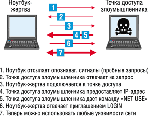
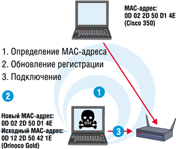
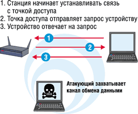
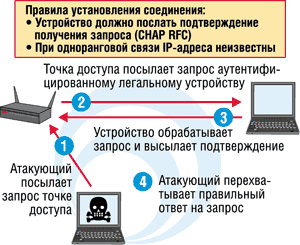
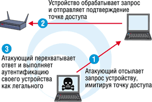
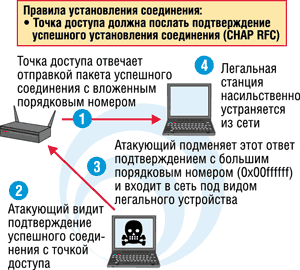
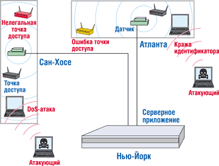

Брайен Моран,
специалист по информационной безопасности компании AirDefense
Материал предоставлен специально для публикации в журнале "BYTE/Россия" компанией Bitpipe; оригинал (Wireless LAN Security - What Hackers Know That You Don't by Brian Moran) опубликован в разделе KnowledgeAlert на сайте http://www.bitpipe.com.
Следующее поколение беспроводных локальных сетей (Wireless LAN, WLAN) стандарта 802.11 создает (увы!) новый плацдарм деятельности для хакеров. Такие эффективные меры защиты, как шифрование и аутентификация, для сетей этого типа все еще разрабатываются, в то время как хакеры уже обзавелись простыми средствами, способными генерировать все более сложные атаки, угрожающие сохранности данных.
Сегодня WLAN для предприятий - такой же технологический рубеж, каким были персональные компьютеры в 80-е годы и Интернет - в 90-е. И, поверьте, цель данной статьи - не в том, чтобы отпугнуть организации от развертывания беспроводных сетей. Эти сети можно защитить, используя многоуровневую систему, обеспечивающую предотвращение вторжений и мониторинг в режиме 24 часа в сутки и 7 дней в неделю, систему, где средства шифрования и аутентификации на базе новых стандартов - лишь часть ее. В статье описаны уязвимости WLAN стандарта 802.11, наиболее часто используемые хакерами, а также самые распространенные хакерские средства и приемы, чтобы менеджеры по информационной безопасности (ИБ) знали, с чем и как им бороться. Ведь для того, чтобы эффективно защищать что-то, нужно прежде всего ознакомиться с потенциальными опасностями.
|
Беспроводные локальные сети - это просто "питомник" для атак, поскольку
технология эта еще молода и ее естественное развитие создает для хакеров
поистине благодатную почву. |
Объекты риска
Беспроводным локальным сетям свойственны все те же проблемы безопасности, что и проводным, но к старым добавляются еще новые угрозы, обусловленные наличием "эфирной" (беспроводной) связи между абонентскими станциями (устройствами) и точками доступа.
Любая точка доступа WLAN, подключенная к кабельной сети, по сути, "транслирует в эфир" Ethernet-соединение и создает угрозу всей корпоративной сети. На первом и втором уровнях протокола традиционной проводной сети (в пределах здания) для защиты от излучения обычно используется кабель категории 5, но в беспроводной части такой преграды нет.
На сделанных со спутника фотографиях распространения радиоизлучения видно, что радиосигналы от одной точки доступа создают "зону покрытия" вполне достаточной для приема мощности, охватывающую несколько городских кварталов за пределами здания. И если не принять надлежащих мер по аутентификации и шифрованию, любой желающий, имея обычный ноутбук с картой беспроводного доступа и находясь в такой "зоне покрытия", может подключиться к сети или скрыто прослушивать весь сетевой трафик.
Некоторые организации ошибочно полагают, что если они используют в беспроводных сетях не жизненно важные системы и не работают с конфиденциальной и очень важной информацией, то им можно не беспокоиться по поводу защиты своей WLAN. Однако участков сетей, которые работают абсолютно автономно, крайне мало. Большая часть сегментов WLAN в какой-то точке подсоединена к магистрали корпоративной сети, а значит, становится прекрасной стартовой площадкой для проникновения хакеров во всю корпоративную сеть. Именно поэтому необходимо защищать каждую точку входа в сеть.
Например, владельцы одной розничной торговой сети считали, что шифрование им ни к чему, так как в беспроводном сегменте они используют только приложение для поддержки складских запасов. Однако, прослушивая открытое соединение с точкой доступа, хакеры могут завладеть конфиденциальными данными о клиентах или другой важной корпоративной информацией, которая хранится в сети. И в данной статье речь как раз пойдет о том, как злоумышленники могут осуществить свои планы.
Поскольку угрозы безопасности WLAN могут исходить как от наиболее злонамеренных хакеров, так и от сотрудников компании, действующих из самых чистых побуждений, комплекс рисков такой сети можно подразделить на две группы: внутренние уязвимости и внешние угрозы.
Внутренние уязвимости
В число внутренних уязвимостей входят как специально развернутые сети мошенников, так и невольные ошибки в конфигурировании WLAN, создающие бреши в защите, а также случайное подключение к соседним беспроводным сетям или сегментам.
Сети-мошенники
Нелегальные точки доступа - хорошо известная проблема. По оценкам компании Gartner, в 2001 г. "по крайней мере 20% организаций обнаруживали мошеннические WLAN, подключенные к их корпоративным сетям". Неблагонадежные сотрудники могут легко скрыть такие точки доступа, маскируя их как анализаторы состояния кабельной сети. Ведь для конфигурирования точки доступа на уровне пользователя при использовании домашнего кабельного или DSL-модема достаточно задать ее МАС-адрес, дублирующий адрес ноутбука.
Другой вид сетей-мошенников, используемых для неавторизованного входа, - временные или ad hoc сети. Для таких одноранговых соединений между устройствами с картами беспроводной связи не требуется ни точки доступа, ни какой-либо аутентификации с другими пользовательскими устройствами, с которыми происходит соединение. Поэтому, хотя временные сети очень удобны при пересылке файлов или для подключения к общему сетевому принтеру, с точки зрения безопасности они представляют явную угрозу. Ведь клиентское устройство в сегменте ad hoc открыто для прямых атак хакера: он может скачать файлы с компьютера-жертвы или использовать авторизованное устройство в качестве канала проникновения во всю корпоративную сеть.
Незащищенность конфигурации
Многие организации обеспечивают безопасность WLAN с помощью виртуальной частной сети (VPN), ошибочно полагая, что этого вполне достаточно. Хотя взломать VPN действительно под силу лишь самым изощренным хакерам, тем не менее, если сеть сконфигурирована неправильно, вход в VPN можно сравнить с железной дверью, ведущей в соломенную хижину. Злоумышленнику вовсе незачем взламывать железную дверь, когда так легко проникнуть внутрь через тонкие стены хижины. Поэтому следует помнить: мошенники могут использовать любые "дыры" - и большие, и маленькие.
|
Уже к концу 2002 г. 30% предприятий обнаружили немалые проблемы с безопасностью
из-за того, что при развертывании WLAN не предпринимали необходимых мер
для их защиты. |
Незащищенные сетевые конфигурации - весьма серьезная проблема. Установки по умолчанию, включающие задание паролей по умолчанию, открытая пересылка SSID-идентификаторов, слабое шифрование или вообще отсутствие такового, отсутствие процедур аутентификации - все это делает точку доступа шлюзом в основную сеть. Наиболее типичные ситуации появления брешей возникают при отказах системы и сбоях напряжения, когда заданные установки конфигурации изменяются на значения по умолчанию. Кроме того, иногда сотрудники организации (не по злому умыслу, а удобства ради) изменяют конфигурацию правильно сконфигурированных точек доступа, чтобы добиться большей оперативности или комфортности работы.
Случайные подключения
Только сейчас становится понятно, что непредумышленные соединения беспроводного устройства с соседней WLAN представляют немалую угрозу безопасности, поскольку при этом происходит наложение корпоративных сетей. Такие непредумышленные подключения происходят, например, когда WLAN компании, расположенной на соседней улице или на ближайших этажах того же здания, имеет более мощный излучающий радиосигнал, который проникает в зону обслуживания вашей компании. ОС Windows XP с дружественной поддержкой WLAN дает возможность беспроводным пользователям вашей сети автоматически (и без их ведома!) проникнуть в сеть соседней компании.
А такое подключение может раскрыть пароли или дать доступ к важным документам любому сотруднику чужой организации. Случайные соединения через такую пользовательскую станцию могут даже объединить сети двух компаний, поскольку в подобной ситуации вход в систему происходит без участия внутренней сетевой системы защиты и контроля доступа.
Внешние угрозы
Описанные выше внутренние уязвимости открывают путь для незваных гостей и хакеров, создающих и более серьезные, чем описано выше, угрозы корпоративной сети. Однако даже самые защищенные WLAN не имеют 100%-ной гарантии безопасности от непрерывно возникающих внешних угроз - таких, как шпионаж, воровство идентификационного кода, и хакерских атак разного рода, в числе которых и "отказ в обслуживании" (Denial-of-Service, DoS), и MIM (Man-in-the-Middle - атака, при которой злоумышленник "вклинивается" в канал между двумя сетевыми устройствами) и т. д.
Прослушивание и шпионаж
Поскольку по своей физической природе беспроводная связь - это радиоволны, то, прослушивая эфир, можно без труда перехватить незашифрованные сообщения. Кстати, информацию, зашифрованную с помощью WEP-протокола (Wired Equivalent Privacy) безопасности, можно очень быстро расшифровать с помощью вполне доступных хакерских средств. Подобный промышленный шпионаж создает угрозу для важной конфиденциальной информации корпорации.
Похищение идентификаторов
Кража идентификационных атрибутов авторизованных пользователей - одна из самых серьезных угроз. Идентификаторы SSID (Service Set Identifier), которые используются как первичные пароли, и МАС-адреса (Media Access Control), которые служат индивидуальными идентификационными номерами, часто задействуются в сети для подтверждения того, что клиенты авторизованы на подключение к точке доступа. Поскольку существующие стандарты шифрования недостаточно надежны, опытные хакеры способны выявить SSID-идентификаторы и МАС-адреса, а затем войти в WLAN в качестве авторизованного пользователя, чтобы захватить канал, скачать или испортить файлы и даже разрушить сеть. Например, такие изощренные атаки, как DoS или MIM, могут полностью отключить сеть и подорвать доверие к защитным функциям VPN.
Инструменты хакера
Известно, что хакеры, равно как и эксперты по компьютерной безопасности, быстро "подбирают ключи" к новым стандартам безопасности, причем почти сразу после их опубликования. Такова участь и стандартов безопасности для WLAN. Приведем несколько примеров аппаратных и программных (свободно распространяемых в Интернете) хакерских средств.
Доступное ПО
Хакерские инструменты для атак на WLAN обновляются практически каждую неделю, и их можно свободно скачать из Сети (см. таблицу). Вместо того чтобы ждать, пока хакер атакует сеть, менеджерам по компьютерной безопасности стоит ознакомиться с этими средствами, чтобы ясно представлять себе, от чего и как защищаться.
Основной арсенал хакерских средств для нападения на WLAN
| Инструмент | Web-сайт | Описание |
| NetStumbler | http://www.netstumbler.com | ПО идентификации точек доступа; обрабатывает данные прослушивания SSID-идентификаторов и отсылает радиосигналы оповещения в процессе поиска зондами точек доступа |
| Kismet | http://www.kismetwireless.net | Сканер для пассивного мониторинга беспроводного трафика и сортировки данных для определения SSID, MAC-адресов, каналов и скорости соединения |
| Wellenreiter | http://packetstormsecurity.nl | Инструмент для обнаружения WLAN; основан на прямой идентификации точек доступа с низким трафиком; маскирует истинный MAC-адрес; интегрируется с системой GPS |
| THC-RUT | http://www.thehackerschoice.com | нструмент для обнаружения WLAN; основан на прямой идентификации точек доступа с низким трафиком. Позиционируется как "ваш первый инструмент для работы с чужой сетью |
| Ethereal | http://www.ethereal.com | Анализатор WLAN; ведет интерактивный просмотр данных, общей и детальной информации всего наблюдаемого беспроводного трафика |
| WEPCrack | http://sourceforge.net/projects/wepcrack/ | Средства взлома кода шифрования; для ключей WEP-шифрования протокола 802.11 используются недавно обнаруженные уязвимые места в RC4 при назначении ключей |
| AirSnort | http://airsnort.shmoo.com | Средства взлома кода шифрования; пассивный мониторинг трафика, при накоплении достаточного количества пакетов вычисляется ключ шифрования |
| HostAP | http://hostap.epitest.fi | Превращает беспроводное устройство ЛВС в точку доступа; для карт на основе набора микросхем Prism2/2.5/3 компании Intersil |
| Примечание: все ПО - свободно распространяемое. | ||
Антенны
Чтобы подключиться к WLAN с расстояния более 100 м, опытные хакеры используют антенны дальнего радиуса действия, которые можно либо купить, либо сделать самому из консервных банок (это довольно просто). Такие самодельные антенны принимают сигналы стандарта 802.11 на дальности вплоть до 650 м. Так что атакующий может расположиться, например, в зоне паркинга компании или вообще за ее пределами.
Взлом шифра
Использовавшаяся первоначально технология шифрования WEP была очень быстро взломана с помощью таких общедоступных инструментов, как WEPCrack и AirSnort, которые используют уязвимости в алгоритме WEP-шифрования. WEPCrack и AirSnort пассивно отслеживают трафик WLAN до тех пор, пока не наберут достаточно данных для выявления повторений, что позволяет расшифровать ключ.
Взлом средств аутентификации
Следующим шагом в развитии защиты WLAN стало введение стандарта 802.1x для аутентификации на уровне порта. Однако в феврале 2002 г. профессор Университета шт. Мэриленд (США) Уильям Арбау (William Arbaugh) опубликовал статью, в которой описывалось, как обойти защиту, базирующуюся на данной технологии. Сейчас в IEEE разрабатывается новый стандарт 802.1i, который вскоре должен быть принят.
"Наезд с пеленгатором"
Для обнаружения физического присутствия WLAN хакеры разработали сканеры и зонды и ввели понятие "наезда с пеленгатором" - перемещения по городу на машине с этими устройствами для выявления незащищенных беспроводных сетей.
Среди наиболее популярных инструментов - бесплатные и простые в использовании программные средства NetStumbler, которые работают как радиопеленгатор точек доступа, распространяющих свои SSID. Затем появилось более продвинутое ПО на платформе Linux, Kismet, которое ведет мониторинг трафика в пассивном режиме.
И NetStumbler, и Kismet работают в связке с глобальной системой позиционирования (GPS), помогающей установить на карте координаты запеленгованных WLAN. Эти карты и данные помещаются на Web-сайтах, например, http://www.wigle.net и http://www.wifinder.com, давая хакерам возможность определять местонахождение таких открытых сетей.
Новые типы атак на WLAN
Разработке эффективных средств защиты и новых стандартов безопасности предшествовало появление все более изощренных типов атак на WLAN.
Тренировки на DefCon
Рост числа атак на WLAN лучше всего иллюстрируется исследованием активности хакерских атак, которое было проведено компанией AirDefense (http://www.airdefense.net) во время посвященного проблемам хакерства съезда DefCon X в Лас-Вегасе в августе 2002 г. Специалисты AirDefense в течение двух часов вели наблюдение за WLAN, созданной специально для данного мероприятия, и выявили более 10 новых, ранее не задокументированных хакерских атак. Было очевидно, что хакеры учились манипулировать протоколом 802.11 для запуска новых видов атак типа DoS и MIM, а также атак, связанных с выявлением и кражей идентификаторов. За два часа мониторинга удалось обнаружить восемь санкционированных точек доступа, 35 несанкционированных и более 800 различных адресов устройств сети. Эксперты AirDefense по безопасности определили, что 200-300 адресов из этих 800 были мошенническими, так как одномоментно в помещении, где была организована WLAN, не могло находиться более 350 человек. Система AirDefense обнаружила 115 одноранговых (или временных) сетей и выявила 123 станции, которые в сумме в течение двух часов запустили 807 атак.
Все эти 807 атак можно разделить на следующие группы:
- 490 атак - зонды с использованием NetStumbler и Kismet, с помощью которых проводилось сканирование сети и выявлялись места, наиболее уязвимые для серьезных атак;
- 190 атак - кража идентификаторов; нелегальный доступ был получен по ложным (принадлежащим другим пользователям) MAC-адресам и SSID;
- 100 атак представляли собой различные виды атак типа DoS, которые либо создавали преднамеренные шумовые помехи, чтобы нарушить радиоприем точки доступа; либо, выбрав определенные устройства, непрерывно отключали их от точки доступа; либо заставляли клиентские устройства направлять свой трафик через другие устройства, так что в конечном счете поток информации вообще не попадал в сеть;
- 27 атак - нестандартные управляющие наборы команд, с помощью которых, используя протокол 802.11, хакеры захватывали другие устройства и управляли сетью.
Среди атак, зафиксированных компанией AirDefense, эксперты по защите WLAN стандарта 802.11x обнаружили немало новых видов атак типа DoS. Вместе с тем они отметили, что более серьезная угроза - темпы роста квалификации хакеров и количества способов атак, базирующихся на протоколах 802.11х.
Обсудим подробнее четыре основных вида атак, представляющих серьезную угрозу для WLAN, описания которых давно опубликованы в Интернете (их могут применить даже начинающие хакеры).
Злоумышленное подключение
Используя широко доступные средства, хакеры могут не только принудить "ничего не подозревающее" устройство подключиться к сети стандарта 802.11х, но и изменить его установки так, что она будет работать в режиме ad hoc. Хакеры начинают атаку с преобразования атакующего устройства в действующую точку доступа с помощью ПО HostAP (рис. 1).
|  | Рис. 1. Семь этапов злонамеренного подключения.
|
Как только устройство-жертва начинает передавать пробное сообщение для подключения к точке доступа, новая, созданная злоумышленником точка доступа отвечает на запрос жертвы, и между ними начинается процесс установления соединения. После предоставления устройству-жертве IP-адреса (если это необходимо) ложная точка доступа может начинать свои атаки. Хакеру становятся доступны все слабые места в ноутбуке жертвы, которые он может использовать, например, для установки HostAP, любого другого изменения конфигурации ноутбука или программных модификаций.
При таких диверсиях устройства не всегда "знают", к какой сети или точке доступа их подключают. Их можно "обмануть" и заставить подсоединиться к ложной точке доступа. Даже те беспроводные сети, в которых имеются VPN, все равно могут подвергаться подобным нелегальным подключениям. Но этот тип атаки не нацелен на взлом VPN и использует лишь плохо защищенных клиентов.
Выход - мониторинг радиоволн беспроводных сегментов корпоративной сети, чтобы исключить возможность связи с неавторизованными точками доступа и сетями. Мониторинг - единственный способ удостовериться в том, куда подключаются устройства вашей сети и какие устройства работают с вашими точками доступа.
Подмена MAC-адресов и кража идентификаторов
Многие предприятия защищают свои WLAN с помощью аутентификации, в основе которой - авторизованный список MAC-адресов. Хотя это дает определенный (но невысокий) уровень защиты для небольших сетей, изначально MAC-адреса не предназначались для таких целей. Любой пользователь может с легкостью изменить MAC-адрес станции или точки доступа (т. е. их "идентичность") и тем самым нарушить аутентификацию на базе MAC-адресов.
Кроме того, доступные хакерам программные средства, такие, как Kismet или Ethereal, дают им возможность без труда выяснить МАС-адрес авторизованного пользователя, а затем, присвоив себе идентификаторы данного пользователя, выдать его за собственный и подключиться к WLAN (рис. 2).
|  | Рис. 2. Подмена MAC-адреса авторизованной станции.
|
Проводя мониторинг радиообстановки WLAN предприятия, служба безопасности при выявлении одновременного присутствия в сети более одного определенного МАС-адреса может обнаружить подмену МАС-адресов. Еще один способ выявления незаконных внедрений в беспроводную сеть за счет чужого МАС-адреса - анализ "отпечатков пальцев" производителя карты доступа. С помощью системы обнаружения вторжений (Intrusion Detection System, IDS) можно, например, обнаружить, что пользователь подключен к сети с помощью карты Orinoco, имея MAC-адрес WLAN-карты Cisco.
MiM-атаки
Man-in-the-Middle - одна из самых изощренных атак, она позволяет взломать даже соединение между авторизованной клиентской станцией и точкой доступа, защищенное с помощью VPN. Введя мошенническое устройство между станцией-жертвой и точкой доступа, хакер становится "посредником" в обмене информацией. По сути, он обманывает и устройство-жертву, заставляя последнее "поверить", что он - это точка доступа, и точку доступа, выдавая себя за авторизованного пользователя.
Суть такой атаки - "обман" протокола аутентификации с предварительным согласованием вызова посредством произвольного принуждения подключенного клиента к новой процедуре аутентификации точки доступа. Устройство должно посылать произвольные запросы точке доступа, которая, в свою очередь, должна ответить на правильный пароль успешной пересылкой пакета.
Прежде чем начать такую атаку, хакер некоторое время пассивно следит за соединениями устройства-жертвы с точкой доступа. Он собирает информацию для аутентификации: имя пользователя, имя сервера, IP-адреса клиента и сервера, идентификатор, используемый для создания отклика, а также выясняет, какой отклик какому запросу соответствует (рис. 3).
|  | Рис. 3. VPN-атака: установление связи, запрос, ответ.
|
Затем хакер пытается связаться с точкой доступа, посылая запрос, который приходит якобы с авторизованной станции. Точка доступа отсылает VPN-запрос аутентифицированному клиентскому устройству, которое обрабатывает запрашиваемый аутентичный отклик и отправляет его точке доступа. Так хакер получает нужный для установления связи отклик (рис. 4).
|  | Рис. 4. Организация VPN-атаки.
|
После этого хакер действует как точка доступа, формируя запрос к авторизованному устройству, которое ("ничего не подозревая") посылает соответствующий отклик для легальной точки доступа. Точка доступа, в свою очередь, отправляет на станцию пакет с подтверждением успешного установления соединения с вложенным порядковым номером, который хакер и перехватывает. Таким образом, он практически завладевает и устройством-жертвой, и точкой доступа, получая все, что нужно для завершения атаки и разрушения VPN (рис. 5).
|  | Рис. 5. VPN-атака типа MiM.
|
Для устранения устройства-жертвы из сети хакер отправляет фальшивый ответ с большим последовательным номером, что не позволяет тому подключиться вновь, а сам внедряется в сеть под видом "уничтоженного" им авторизованного пользователя (рис. 6).
|  | Рис. 6. VPN-атака - получение доступа в сеть.
|
Только непрерывный мониторинг (в формате 24 часа 7 дней в неделю) и применение очень совершенной системы IDS позволяют обнаружить такой тип атак на WLAN. Эффективная система безопасности прежде всего должна постоянно отслеживать события и проводить анализ того, что происходит во WLAN. Средства IDS, со своей стороны, должны уметь выявлять атаки подобного типа по аутентификационному коду (сигнатуре) и двойному использованию одного МАС-адреса и имени пользователя - авторизованным устройством и хакером.
Атаки типа "Отказ в обслуживании"
Для любого сетевого администратора и менеджера по безопасности нежелательны простои и снижение производительности, вызываемые DoS-атаками. В беспроводной среде такая атака может прийти с любого направления. Заметим, что урон от них практически не зависит от того, какую "версию" использует хакер - "основную" или новейшую, самую изощренную.
Особенно уязвимы беспроводные сети стандарта 802.11b, которые используют нелицензируемую полосу частот 2,4 ГГц, где также работают СВЧ-печи, мониторы слежения за грудными детьми, беспроводные радиотелефоны и т. д. Эти потребительские устройства дают в руки хакерам простой способ реализации исключительно разрушительных DoS-атак. Большой и неконтролируемый шум, исходящий от этих приборов, может стать существенной помехой для WLAN и нарушить ее работу.
Но хакеры способны создавать и более сложные атаки данного типа, сконфигурировав устройство как точку доступа, которая постоянно генерирует в радиоэфир команды "разъединить", что заставляет все устройства в зоне ее действия отключиться от WLAN. Другой вариант DoS-атаки - периодическая (каждые несколько минут) передача незаконной точкой доступа команд на разрыв соединения. В этом случае устройства непрерывно отключаются от сети и снова к ней подключаются.
В дополнение к атакам со злонамеренным отключением, хакеры теперь научились использовать для запуска DoS-атак расширяемый протокол аутентификации (Extensible Authentication Protocol, EAP). На страничке The Unofficial 802.11 Security Web Page сайта http://www.drizzle.com/~aboba/IEEE перечислены шесть различных видов DoS-атак, основанных на манипуляции EAP-протоколом. Воздействия на устройства и точки доступа могут быть различными: команды конца сеанса связи или начала передачи, преждевременная отправка подтверждений успешного подключения или сообщений о сбое в передаче и другие "применения" EAP-протокола.
В последнее время появились разновидности DoS-атак, воздействующие на всю корпоративную сеть и использующие неправильную конфигурацию WLAN или незарегистрированные точки доступа. Если точка доступа присоединена к нефильтруемому сегменту сети, то она рассылает пакеты "связующее дерево" (Spanning Tree, SP согласно 802.1D). А это открывает возможность для атак, которые выводят из строя все беспроводное оборудование, а также провоцирует "выгорание начинки" всей инфраструктуры внутренней сети - концентраторов, маршрутизаторов, коммутаторов и т. д., - подключенной после используемой для атаки точки доступа.
При нормальной работе сети SP-алгоритм обеспечивает беспетельную топологию Ethernet-сетей, содержащих параллельные мосты и множество Ethernet-сегментов (петля появляется при наличии меняющихся вариантов маршрутов между хостами). Если петли создаются в протяженной сети, мосты могут неограниченно пересылать трафик на фальшивые или неверные Ethernet-хосты; результат - увеличение трафика и снижение производительности сети до такого уровня, когда хосты практически прекращают откликаться и работать.
Хакер может запустить DoS-атаку, преднамеренно внедрив в сеть подобную петлю, проникнув через WLAN-сегмент в корпоративную сеть и злонамеренно повторив в ней измененную SP-сессию. Хакерский сетевой анализатор может реализовать такую атаку, передав отражение SP-сессии обратно в точку доступа WLAN, которая, в свою очередь, будет посылать пакеты управляемой SP-сессии к другим внутренним хостам. В результате возникает разрушительный эффект домино, приводящий интеллектуальные концентраторы, мосты, маршрутизаторы и коммутаторы полностью в нерабочее состояние (как правило, для возврата в рабочий режим необходима их перезагрузка или повторное конфигурирование).
Любая незарегистрированная точка доступа, подключенная к концентратору, маршрутизатору или коммутатору, не защищенному брандмауэром, может открыть сеть для этого, самого разрушительного вида DoS-атак. Проведя исследование защиты беспроводных сетей, компания AirDefense обнаружила, что по крайней мере одна из каждых 20 сетей уязвима для DoS-атак такого рода, которые ведутся из мошеннических точек доступа, появляющихся при неправильно сконфигурированных WLAN.
Технология защиты WLAN
Пока утверждается протокол 802.11i и создаются новые средства защиты, администраторам безопасности следует как минимум "изучать врага". Но уже есть и адекватные средства защиты. Так, естественным завершением исследования безопасности WLAN, проведенного AirDefense, стало предложенное компанией решение, которое обнаруживает уязвимые места WLAN, усиливает их защиту, а также выявляет и предотвращает вторжения извне. Пока это единственное в отрасли решение. В настоящее время созданная в компании AirDefense технология обеспечения безопасности WLAN, которая объединяет возможности мультинаправленного обнаружения вторжений и уязвимостей на основе политик безопасности с постоянным всеобъемлющим мониторингом, находится в процессе патентования.
Продукт AirDefense - это система управления и защиты от вторжений в беспроводную сеть, которая обнаруживает уязвимости сети, выявляет и защищает ее от внешних воздействий и атак на основе политики безопасности и помогает управлять WLAN, отслеживая ее производительность.
В систему AirDefense входят распределенные датчики и серверные приложения (рис. 7). Первые располагаются вблизи точек доступа, проводя мониторинг работы WLAN и отсылая отчеты серверным приложениям, которые анализируют трафик в реальном времени. Удаленные датчики, управление которыми осуществляется централизованно, охватывают примерно 3700 кв. м офисного пространства, обеспечивая мониторинг WLAN в формате 24x7. Серверные приложения анализируют трафик в реальном времени, выявляя развернутые, но не зарегистрированные сегменты WLAN, вторжения и возможные угрозы, и формируют механизмы отражения атаки, указывая на изменения в деталях конфигурации и нарушения политики безопасности. Это ПО ведет постоянный мониторинг беспроводной сети, выявляя также и неисправности.
|  | Рис. 7. Так работает решение защиты от AirDefense.
|
Для анализа состояния сети система AirDefense использует фирменный механизм - State-Analysis Engine (SAE), который вычисляет корреляцию полученных данных с помощью средств мультинаправленного обнаружения (Multi-Dimensional Detection Engine, MDDE) и определяет риски нарушения защиты.
Благодаря поминутному контролю всего беспроводного трафика любое вторжение немедленно распознается, атаки быстро обнаруживаются, а значит, могут быть приняты соответствующие меры по защите сети. В основе системы MDDE лежит несколько технологий, разработанных специалистами компании специально для сетей 802.11х, работающих на уровнях 1 и 2 этих протоколов.
Обычный недостаток большинства систем обнаружения - ошибочные срабатывания, поскольку в них почти всегда задействована только одна технология обнаружения (как правило, идентификация атак). AirDefense создала механизм мультинаправленного обнаружения, выявляющий реальные угрозы на основе корреляции данных, что существенно снижает число ошибочных срабатываний. При анализе используются сигнатуры, набор правил политики безопасности, установки протокола и статистические данные аномальной работы сети.
При определении вторжения или атаки система дает команду атакованной точке доступа разорвать злонамеренное соединение. При выявлении нарушений политики безопасности в какой-то точке доступа система выполняет ее переконфигурирование.
Автоматизированный радиомониторинг всего трафика позволяет обнаружить жульнические точки доступа и уязвимости сети сразу же по их возникновении. Заметим, что хотя упомянутое выше ПО NetStumbler или Kismet тоже можно использовать для данной цели, но при этом сетевой администратор должен физически обойти всю зону охвата WLAN, чтобы считать данные со сканеров. Кроме того, ему приходится самостоятельно интерпретировать эти данные, что требует немалого времени. Да и эффективность такого способа ограничена - на предмет угроз анализируется только определенная выборка радиоэфира, а после сканирования могут возникнуть новые мошеннические точки доступа и новые уязвимости, которые не будут обнаружены до следующей проверки сети администратором.
Что касается несанкционированных подключений, то при выявлении инцидента система способна отключить устройство от неавторизованных точек доступа, а точки доступа - от базовой сети.
Мониторинг радиоканалов позволяет обнаружить ложные MAC-адреса, анализируя их на уникальность или по "отпечаткам пальцев" производителей карт доступа. Идентификация MiM-атак базируется на уже известных сигнатурах и неправильном использовании протоколов, когда хакер заставляет точку доступа и станцию изменить установленные протоколы для подключения и аутентификации.
Учитесь защищать Wi-FiБеспроводные сети - быстро развивающийся сегмент российского ИТ-рынка. Но одна из самых больших проблем, с которыми сталкивается молодой рынок Wi-Fi, - безопасность. Эксперты Учебного центра "Информзащита" (http://www.itsecurity.ru), проведя "полевое" исследование на одной из московских улиц с использованием программы сканирования и мониторинга эфира, только на участке в 2 км обнаружили 11 беспроводных сетей, четыре из которых абсолютно "открыты" для злоумышленников. Очевидно, что до создания "хакерской карты" Москвы (и, возможно, ее опубликования в Интернете) буквально рукой подать. Чтобы помочь пользователям и владельцам сетей Wi-Fi, руководство Учебного центра приняло решение ввести в программу новый курс "Безопасность беспроводных сетей", который сегодня уже разработан (занятия по нему начинаются 10 июня). |